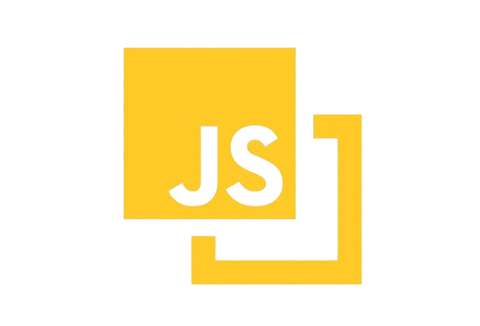

Introducción
Bienvenido a nuestra página sobre lenguajes de programación: Los lenguajes de programación son herramientas
fundamentales en el mundo de la informática,
permitiendo a los desarrolladores instruir a las computadoras para realizar tareas específicas. Cada
lenguaje tiene sus propias reglas y sintaxis,
adaptándose a diversos propósitos y estilos de programación.
Desde los clásicos como C, hasta los más modernos como Python, estos lenguajes actúan como intermediarios
entre los humanos y las máquinas,
facilitando la creación de software, aplicaciones web y mucho más.
Exploraremos aquí algunos de los lenguajes más prominentes y sus aplicaciones en el emocionante mundo de la
programación
Ventajas y desventajas de los lenguajes de programación
Ventajas:
Productividad:Algunos lenguajes, como Python y Ruby,
están diseñados para maximizar la productividad del programador, facilitando la escritura de código de
manera rápida y eficiente.
Legibilidad:Lenguajes como Python ponen un fuerte énfasis en la legibilidad del
código,
lo que facilita la colaboración y el mantenimiento del software.
Eficiencia de desarrollo:Algunos lenguajes, como PHP para desarrollo web, están
optimizados para tareas específicas, lo que puede conducir a un desarrollo más rápido y eficiente en ciertos
dominios.
Comunidad y soporte:Lenguajes populares, como JavaScript y Java, a menudo
tienen comunidades activas y abundante documentación, lo que facilita encontrar ayuda y recursos en línea..
Desventajas:
Rendimiento:Algunos lenguajes de alto nivel, como Python, pueden tener un
rendimiento inferior en comparación con lenguajes de bajo nivel como C++ en ciertos escenarios, lo que puede
ser crítico para aplicaciones de alto rendimiento.
Limitacion de plataforma:Algunos lenguajes pueden tener limitaciones en
términos de compatibilidad con ciertas plataformas o sistemas operativos.
Curva de aprendizaje:Lenguajes más especializados o con paradigmas de
programación menos convencionales pueden tener una curva de aprendizaje más pronunciada, lo que puede ser un
desafío para los programadores principiantes.
Requisitos de recursos:Algunos lenguajes pueden requerir más recursos
computacionales, como memoria o potencia de procesamiento, lo que puede ser un factor a considerar en
entornos con limitaciones de recursos.

Se utiliza principalmente del lado del cliente, implementado como parte de un navegador web
permitiendo mejoras en la interfaz de usuario y páginas web dinámicas y JavaScript del lado del servidor
(Server-side JavaScript o SSJS). Su uso en aplicaciones externas a la web, por ejemplo en documentos
PDF, aplicaciones de escritorio (mayoritariamente widgets) es también significativo, JavaScript se
diseñó con una sintaxis similar a C++ y Java, aunque adopta nombres y convenciones del lenguaje de
programación Java. Sin embargo, Java y JavaScript tienen semánticas y propósitos diferentes. Su relación
es puramente comercial, tras la compra del creador de Java (Sun Microsystems) de Netscape Navigator
(creador de LiveScript) y el cambio de nombre del lenguaje de programación.
Ejemplos de Código
// Ejemplo de código de Python
print("Hola Mundo")
// Ejemplo de código de C++
int main(){
std::cout<<"Hola, Mundo!"<< std::endl;
return 0;
}
// Ejemplo de código de JavaScript
console.log("Hola,Mundo!");
// Ejemplo de código de PHP
?php
echo 'Hola mundo';
?>